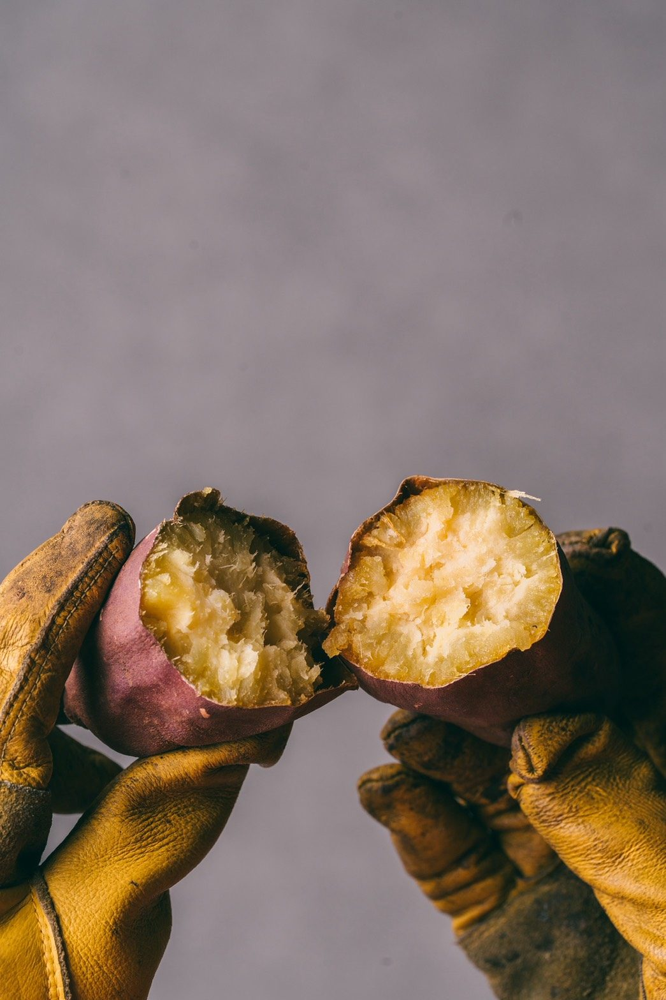
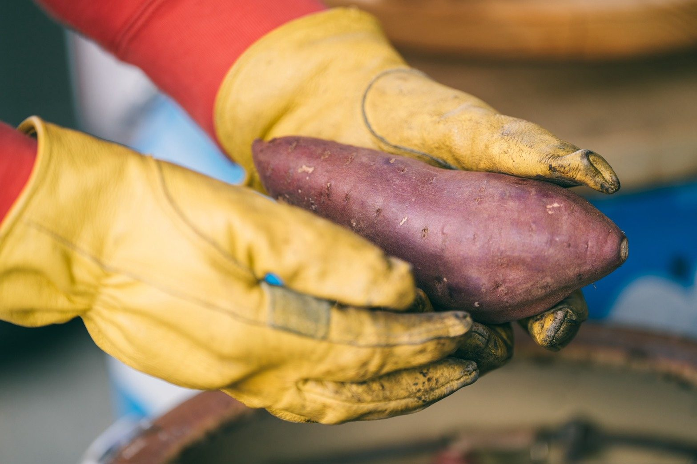
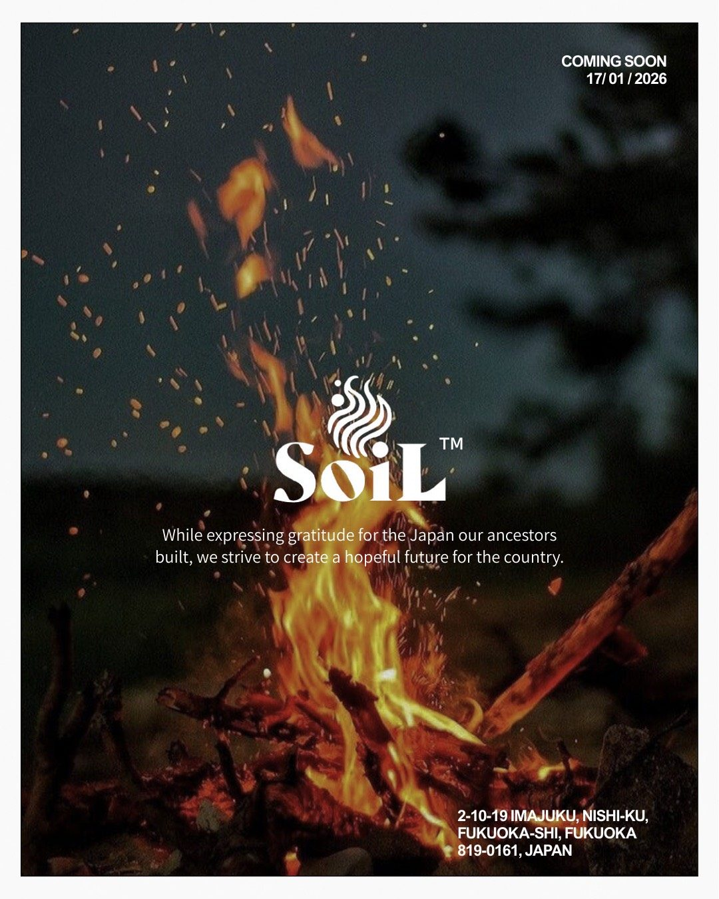
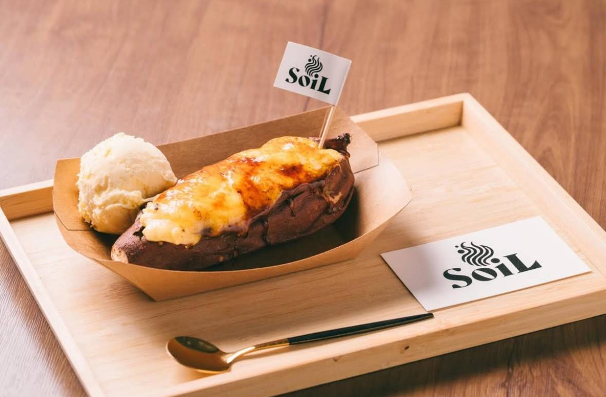
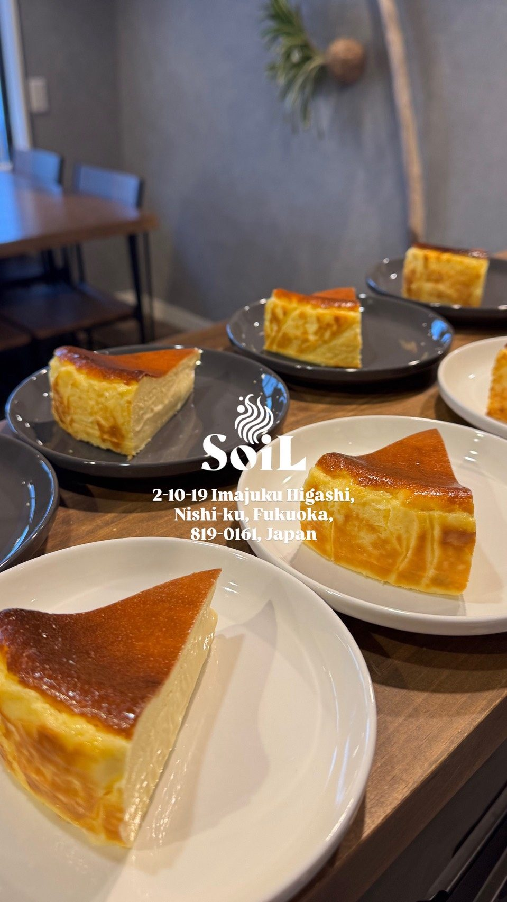

SoiLの焼き芋は、時間をかけることから始まります。収穫したさつまいもを蔵でねかせ、焼くのは昔ながらの「壺」。遠赤外線でゆっくり火を通すことで、皮はパリッと、中はねっとり濃厚に仕上がります。
蔵でゆっくり眠らせた紅はるかは、甘さと奥深さが増していきます。
炭火の壺の中で、1本1本じっくり。焼きムラの少ない、しっとりした焼き上がり。
ほくほくの温かい壺焼き芋と、スイーツのような冷やし壺焼き芋。

焼き上げて数時間置いた芋は、しっとり濃厚な甘さに。壺焼きならではの香りとコクを感じてください。
ラップをかけて電子レンジ（500Wで約30〜60秒）、またはトースターで軽く焼いても美味しいです。
冷蔵庫で一晩ねかせると、まるでスイートポテトのような濃厚な甘さに。
※ランチの内容は変わることがあります。最新のメニューはInstagramでお知らせしています。
※価格は税込です。※商品のお取り置きは、InstagramのDMで受け付けています。




50日以上熟成させた紅はるかの壺焼き芋が、福岡の手みやげとして取り上げられました。お持ち帰り・ちょっとしたお土産にも、ぜひどうぞ。
壺焼き芋の出店をご希望の主催者さまは、日程・場所・規模をInstagramのDMでお知らせください。内容を確認して、ご連絡いたします。
DMで相談する